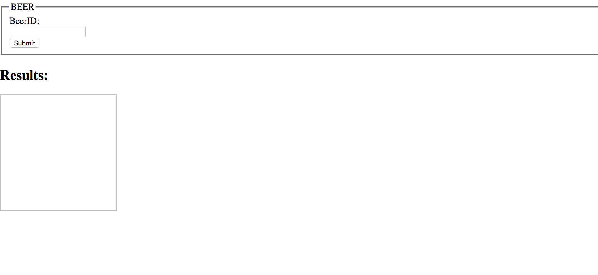

Creating a simple HTML page using Get/beerid method
The Code
Below is the the full code that you can copy and paste into a .HTML file.
<!DOCTYPE html>
<html>
<head>
<script>
"Put bottom code in here"
</script>
</head>
<body>
<form>
<fieldset>
<legend>BEER </legend>
<label for="Enter beerID"> </label>
BeerID: <br>
<input type="text" name="beer" id="beer">
<br>
<input type="submit" id="Submit">
</fieldset>
</form>
<div>
<h2>Result</h2>
<img id="myImg" src="" width="200" height="200"> <br>
<span id ="description"> </span>
</div>
</body>
</html>So there is a lot of code here so I broke it down with the simpler HTML file without the javascript HTTP call above and the javascript below. The above code should look familiar it is has the basic HTML skeleton. In the body is a simple <form> we don't need to set any action for the form because the javascript will capture the form information.
<script>
document.addEventListener('DOMContentLoaded', bindButtons);
function bindButtons(){
document.getElementById('Submit').addEventListener('click', function(event){
var req = new XMLHttpRequest();
var beerID = 'beer/'+ document.getElementById('beer').value;
req.open('GET', 'https://api.brewerydb.com/v2/' + beerID +
'?key=3de3cfdc91affc429fbc0d020361a489&format=json', true);
req.addEventListener('load',function(){
if(req.status >= 200 && req.status < 400){
var response = JSON.parse(req.responseText);
document.getElementById("myImg").src = response.data.labels.icon;
document.getElementById("description").textContent = response.data.description;
console.log(response.data.description);
} else {
console.log("Error in network request: " + req.statusText);
}
});
req.send();
event.preventDefault();
})
}
</script>
So the code above is the bread and butter of what is going to bring this all together. If you look closely you have seen some of this code before. The simple HTTP call we did earlier can be found in the code above except we are not using the search method but the get/beerid method. This call is also called asychronous execution (while we won't go over what asychronous is, the call we made earlier was sychronous). What we are ultimately doing in the code above is getting the information submitted by the forms and creating a function that executes when the form button is clicked. So what this piece of code is doing
document.addEventListener('DOMContentLoaded', bindButtons); is calling the bindButtons function when the HTML document has been completely loaded and parsed.
The bindButtons function collects the information when the form, inputs the variables into the query string, sees if the get request was successful then uses the document.getElementById("myImg").src = response.data.labels.icon; to parse through the JSON file and get the elements we wanted; which is the label for the beer.
So if you take the code above and assemble it into an .html file and then open that file into a Chrome browser this is what you should see. So remember this call uses the get/beerid method not the search method we used earlier. So you will need to do some investigating and find the ID's of beer not just their names. As of now I have given you most of the skills to explore on your own. Browse the website, search for beers using JSFiddle, and then capture the beer Id's and use them here with your html page. And if something doesn't work use the Inspect feature to try and figure it out. This code calls on labels but will break if a beer doesn't have one. GOOD LUCK AND HAPPY CODING!!
